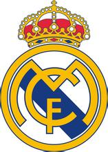

皇家马德里足球俱乐部
球队简介
皇家马德里足球俱乐部（Real Madrid Club de Fútbol ，中文简称为皇马）是一家位于西班牙首都马德里的足球俱乐部，球队成立于1902年3月6日，前称马德里足球队。1920年6月29日，时任西班牙国王阿方索十三世把"Real"（西语，皇家之意）一词加于俱乐部名前，徽章上加上了皇冠，以此来推动足球运动在西班牙首都马德里市的发展。从此，俱乐部正式更名为皇家马德里足球俱乐部。 皇家马德里足球俱乐部，拥有众多世界球星。2000年12月11日被国际足球联合会（FIFA）评为20世纪最伟大的球队。2009年9月10日被国际足球历史和统计联合会评为20世纪欧洲最佳俱乐部。2014年9月10日被评为2014年度欧洲最佳俱乐部。 皇家马德里已夺得过11次欧洲冠军杯冠军（夺冠次数欧洲足坛第一）、32次西班牙足球甲级联赛冠军（西甲第一）、19次西班牙国王杯冠军、9次西班牙超级杯冠军、3次欧洲超级杯冠军。